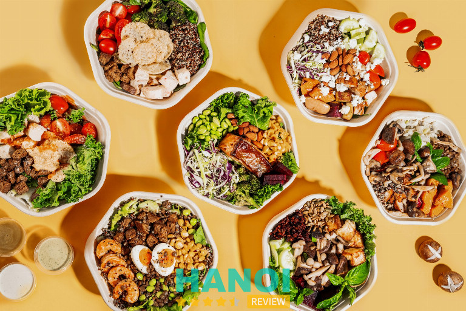
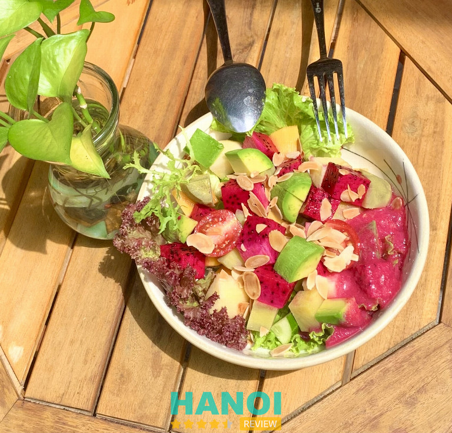
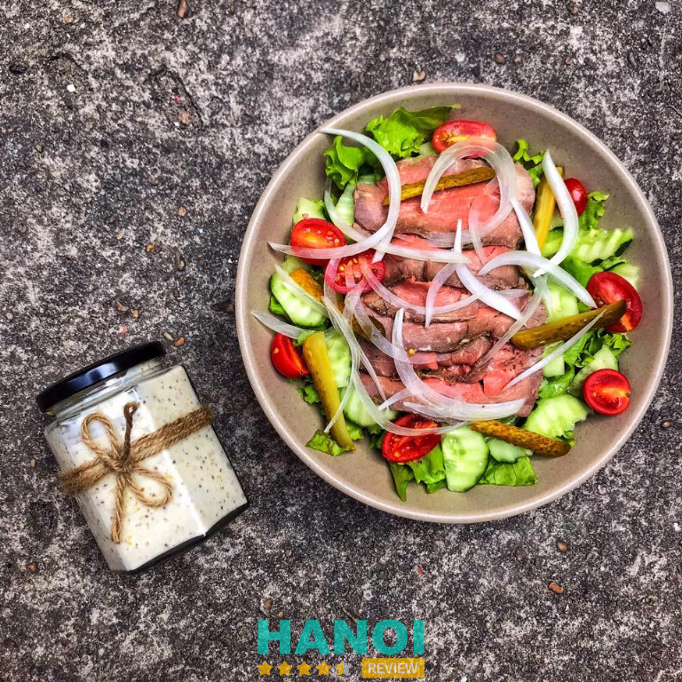
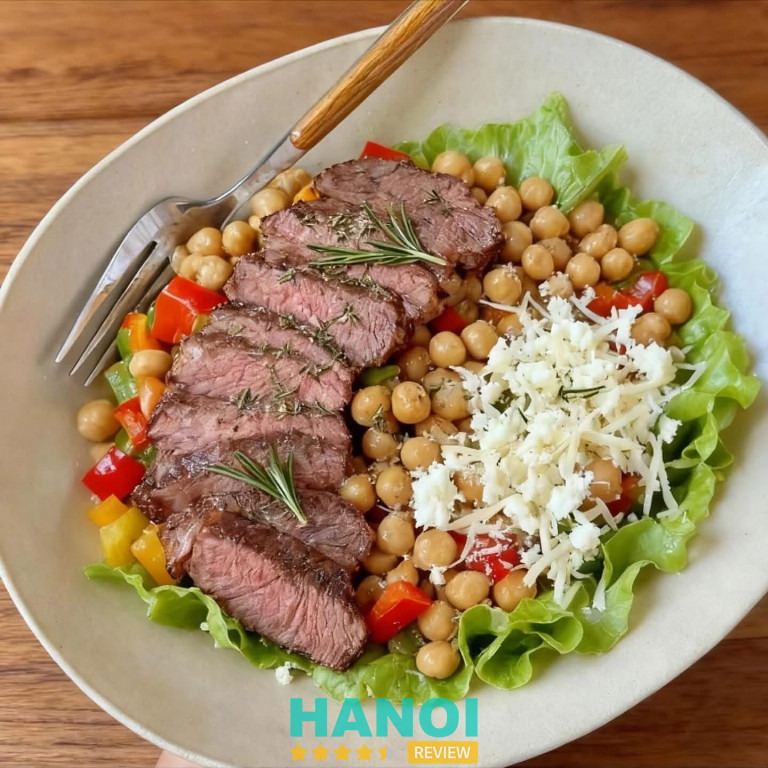
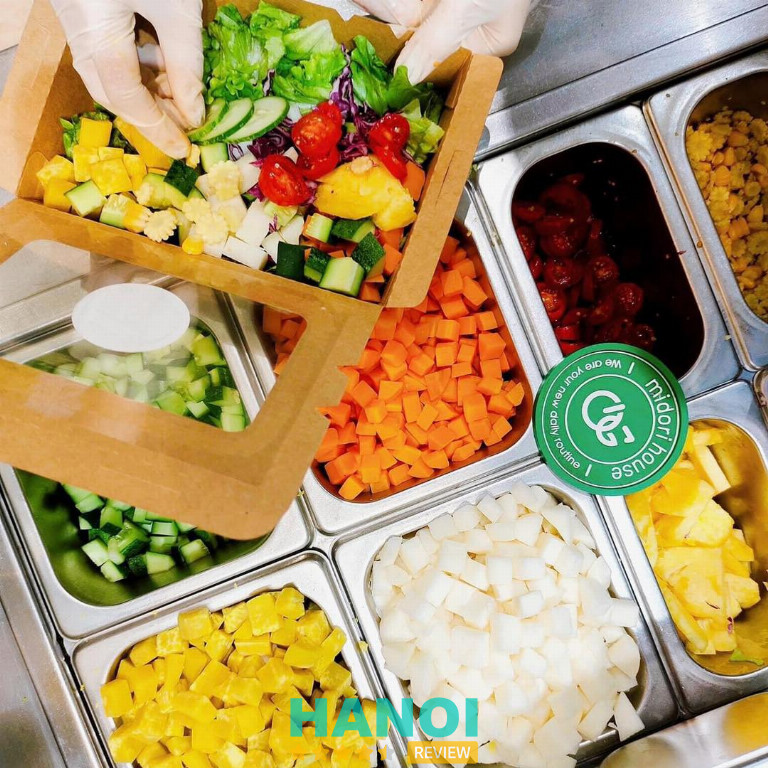
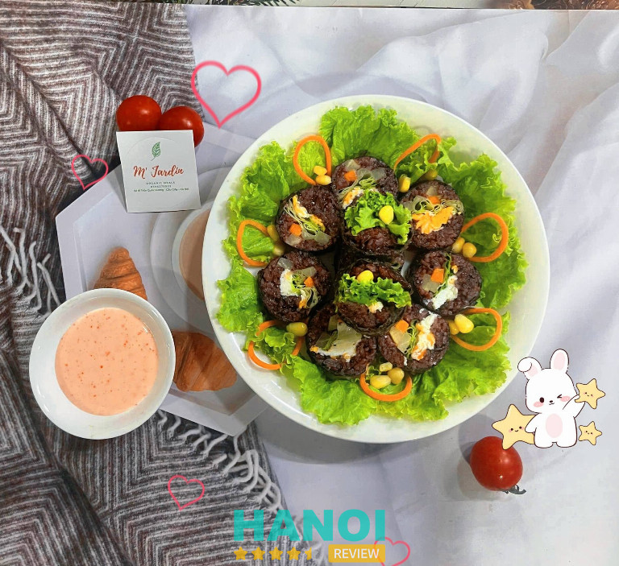
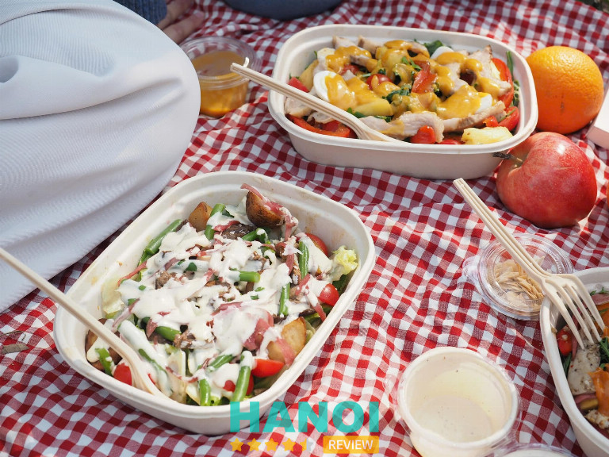
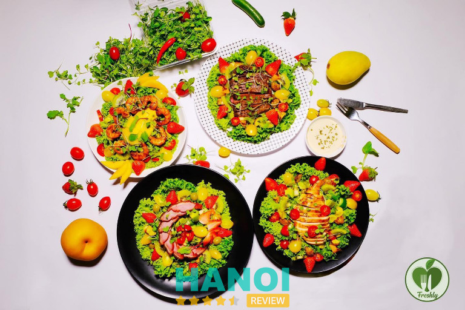
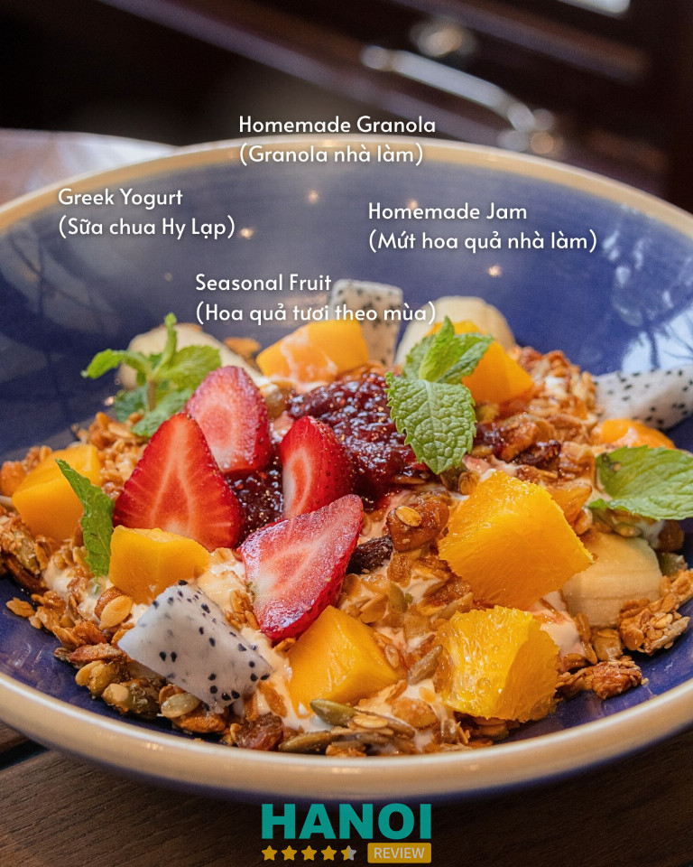
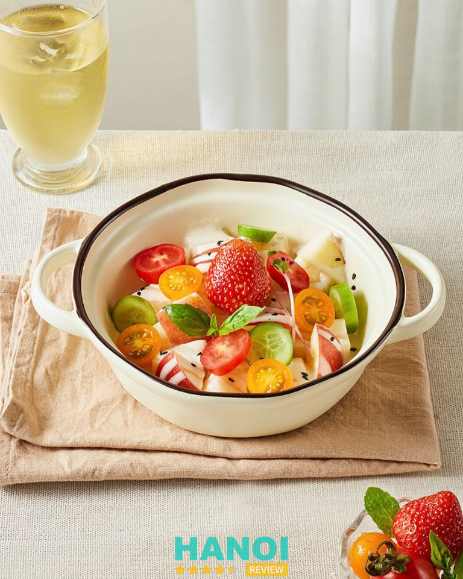

10 Quán salad ở Hà Nội tươi ngon, healthy và đáng thử nhất
Nếu bạn đang tìm kiếm những quán salad ở Hà Nội vừa ngon miệng, vừa giúp duy trì vóc dáng và lối sống lành mạnh, thì thật sự có nhiều lựa chọn hấp dẫn dành cho bạn. Từ những quán salad chuyên nghiệp đến các tiệm ăn healthy nhỏ xinh, mỗi nơi đều mang đến hương vị thanh mát, bổ dưỡng, giúp bạn nạp năng lượng tích cực mỗi ngày.
Top 10 quán salad tại Hà Nội menu đa dạng, tươi, sạch
Salad không chỉ là món ăn dành cho người ăn kiêng mà còn là lựa chọn lý tưởng cho bữa trưa nhẹ nhàng, tốt cho sức khỏe. Danh sách dưới đây giúp bạn dễ dàng tìm ra địa chỉ salad chất lượng, ngon và phù hợp khẩu vị.
Tossful – Ba Đình
Tọa lạc tại vị trí đắc địa ở tầng B1, Capital Place, 29 Liễu Giai, Ba Đình, Hà Nội, Tossful là điểm đến lý tưởng cho những tín đồ ẩm thực tìm kiếm sự tươi ngon và dinh dưỡng. Thương hiệu này đã khẳng định được uy tín qua việc mang đến những salad bowl chất lượng, được chế biến từ những nguyên liệu tươi ngon được lựa chọn cẩn thận hàng ngày.
Từ nông trại đến bàn ăn, Tossful luôn đặt tiêu chí chất lượng lên hàng đầu, đảm bảo mỗi suất salad đều là một trải nghiệm ẩm thực đáng giá.

Tossful không chỉ đơn thuần là một quán ăn, mà còn là một “Quầy Salad” chuyên nghiệp và một “Cửa hàng thực phẩm tự nhiên” đáng tin cậy. Điểm mạnh của Tossful nằm ở sự đa dạng trong thực đơn và nguồn nguyên liệu sạch, rõ ràng. Khách hàng có thể tự tay tùy chọn các thành phần để tạo ra salad bowl theo sở thích riêng tại quầy.
Ngoài ra, quán cũng cung cấp các công thức salad đặc trưng đã được nghiên cứu kỹ lưỡng để tối ưu hóa hương vị và dinh dưỡng. Các sản phẩm tại đây luôn được duy trì mức giá hợp lý, tương xứng với chất lượng vượt trội.
Các điểm nổi bật về dịch vụ và sản phẩm của Tossful:
- Nguyên liệu tươi sạch, nhập trực tiếp từ các trang trại uy tín.
- Thực đơn phong phú, đa dạng, phù hợp với nhiều chế độ dinh dưỡng.
- Phục vụ nhanh chóng, chuyên nghiệp tại khu vực trung tâm.
- Không gian thoáng đãng, hiện đại tại Capital Place.
Với sự tận tâm trong từng suất ăn và sự minh bạch trong nguồn gốc nguyên liệu, Tossful xứng đáng là lựa chọn hàng đầu khi bạn cần một bữa ăn nhẹ nhàng, bổ dưỡng. Hãy đến và trải nghiệm sự khác biệt trong từng món ăn tại Tossful để cảm nhận trọn vẹn hương vị của thiên nhiên.
Thông tin liên hệ:
- Địa chỉ: B1, Capital Place, 29 Liễu Giai, Ba Đình, Hà Nội
- Điện thoại: 0828 565 166
- Email: tossful@gmail.com
- Facebook: fb.com/tossful
Salads Hub – Hoàn Kiếm
Salads Hub nổi lên như một điểm đến không thể bỏ qua cho những người tìm kiếm quán salad ở Hà Nội chất lượng và dinh dưỡng. Tọa lạc tại con phố Lý Nam Đế sầm uất, Salads Hub đã xây dựng được danh tiếng vững chắc trong cộng đồng yêu thích ẩm thực lành mạnh nhờ sự tận tâm trong việc chế biến các món ăn tươi ngon, bổ dưỡng.
Quán không chỉ là một quán ăn mà còn là người bạn đồng hành tin cậy trên hành trình chăm sóc sức khỏe của bạn. Thế mạnh lớn nhất của Salads Hub là nguồn nguyên liệu tươi mới được chọn lọc kỹ lưỡng mỗi ngày và công thức chế biến độc đáo, giữ trọn hương vị tự nhiên.

Sự khác biệt của Salads Hub nằm ở sự đa dạng và chất lượng tuyệt vời của thực đơn. Mỗi suất salad đều được cân đối hoàn hảo về mặt dinh dưỡng, từ các loại rau xanh giòn tươi, protein chất lượng cao (thịt gà, bò, cá hồi…) đến các loại hạt và nước sốt đặc trưng do quán tự làm.
Bạn có thể tự tay “thiết kế” suất salad của riêng mình hoặc lựa chọn từ các công thức có sẵn, phù hợp với mọi sở thích ăn uống, dù bạn đang ăn kiêng, tập gym hay đơn giản là muốn có một bữa ăn nhẹ nhàng, healthy. Quán luôn chú trọng đến trải nghiệm của khách hàng, từ khâu chuẩn bị nguyên liệu đến khâu phục vụ nhanh chóng, chuyên nghiệp.
Dưới đây là những điểm nổi bật khi lựa chọn Salads Hub:
- Nguyên liệu: Rau củ tươi, sạch, nguồn gốc rõ ràng.
- Thực đơn: Đa dạng, linh hoạt tùy chỉnh theo nhu cầu.
- Sốt: Nước sốt độc quyền, ít béo, giữ nguyên hương vị.
- Dịch vụ: Đặt hàng online tiện lợi, giao hàng nhanh chóng.
- Không gian: Sạch sẽ, thoáng mát, thích hợp ăn tại chỗ hoặc mang đi.
Nếu bạn đang tìm kiếm một quán salad ở Hà Nội thực sự chất lượng, Salads Hub là lựa chọn hoàn hảo. Đến với Salads Hub, bạn đang chọn một lối sống khỏe mạnh hơn, tràn đầy năng lượng hơn qua từng bữa ăn. Hãy để Salads Hub mang đến cho bạn những trải nghiệm ẩm thực lành mạnh tuyệt vời nhất.
Thông tin liên hệ:
- Địa chỉ: 95G Lý Nam Đế, Hoàn Kiếm, Hà Nội, Việt Nam
- Điện thoại: 0829 292 727
- Email: saladshub@gmail.com
- Facebook: fb.com/saladshub
GỢI Ý: 10 Quán cafe Acoustic tại Hà Nội nhạc cực chill, view siêu đẹp
Delisa – Fresh Salad Bar – Hoàn Kiếm
Nằm giữa trung tâm thủ đô, Delisa – Fresh Salad Bar là quán salad ở Hà Nội nổi bật với không gian hiện đại và phong cách ẩm thực lành mạnh. Tọa lạc tại 8A Lý Đạo Thành, Delisa thu hút thực khách bởi sự kết hợp tinh tế giữa nguyên liệu tươi sạch, chế biến sáng tạo và phong cách phục vụ chuyên nghiệp. Đây là điểm hẹn quen thuộc của những ai yêu thích ẩm thực healthy, nhẹ nhàng mà vẫn trọn vị.

Tại Delisa, salad không chỉ là món ăn mà còn là trải nghiệm vị giác mới mẻ. Mỗi phần salad được chuẩn bị từ nguyên liệu nhập trực tiếp từ nông trại sạch, rau củ xanh mướt, thịt và hải sản tươi ngon. Các loại nước sốt được pha chế thủ công, mang đến hương vị độc đáo, cân bằng giữa dinh dưỡng và sự hấp dẫn.
Điểm nổi bật tại Delisa – Fresh Salad Bar:
- Menu đa dạng với hơn 20 lựa chọn salad theo khẩu vị.
- Nước sốt nhà làm độc quyền, không chất bảo quản.
- Không gian nhẹ nhàng, hiện đại, thích hợp ăn trưa hoặc gặp gỡ bạn bè.
- Phục vụ nhanh chóng, thân thiện và chuyên nghiệp.
- Nhiều combo tiện lợi cho dân văn phòng yêu thích lối sống xanh.
Là quán salad ở Hà Nội được yêu thích, Delisa mang đến cảm hứng sống lành mạnh thông qua từng bữa ăn. Hương vị tươi mới, trình bày tinh tế và dịch vụ tận tâm đã giúp Delisa trở thành lựa chọn hàng đầu của nhiều tín đồ ẩm thực healthy.
Thông tin liên hệ:
- Địa chỉ: 8A Lý Đạo Thành, Hoàn Kiếm, Hà Nội
- Điện thoại: 0912 050 868
- Email: realdelisa@icloud.com
- Facebook: fb.com/realdelisa
Let’eat Healthy Food – Thanh Xuân
Let’eat Healthy Food là địa chỉ quen thuộc của những ai theo đuổi lối sống lành mạnh tại Hà Nội. Nằm trên tuyến phố Nguyễn Trãi sầm uất, Let’eat mang đến thực đơn đa dạng với các sản phẩm đồ ăn healthy chất lượng, phù hợp cho người ăn kiêng, tập gym hay đơn giản là muốn duy trì vóc dáng và sức khỏe tốt hơn. Sự ra đời của Let’eat xuất phát từ mong muốn biến “ăn uống lành mạnh” trở nên dễ dàng, tiện lợi và thú vị mỗi ngày.

Các sản phẩm của Let’eat Healthy Food đều được chế biến từ nguyên liệu sạch, công thức cân bằng dinh dưỡng, mang hương vị tự nhiên và tốt cho cơ thể. Mức giá lại vô cùng hợp lý, “mềm như đậu hũ non”, giúp ai cũng có thể bắt đầu hành trình sống xanh, ăn lành mà không lo chi phí.
Những lựa chọn hấp dẫn tại Let’eat Healthy Food:
- Granola giòn rụm, ăn vui miệng mà không sợ tăng cân.
- Bánh mì đen, ức gà, salad giảm mỡ – ngon miệng mà vẫn giữ dáng.
- Hạt dinh dưỡng, snack low-carb, nước ép thanh lọc cơ thể.
- Ưu đãi hấp dẫn: giảm đến 50%, freeship toàn quốc, quà tặng cho đơn từ 199K.
Let’eat Healthy Food trở thành điểm đến tin cậy cho những ai yêu sức khỏe và muốn tìm kiếm bữa ăn tiện lợi, đủ chất. Mỗi món ăn không chỉ ngon mà còn mang năng lượng tích cực cho ngày mới.
Thông tin liên hệ:
- Địa chỉ: Ngõ 470 Nguyễn Trãi, Thanh Xuân, Hà Nội
- Điện thoại: 0942 162 868
- Email: leteatdietcatering@gmail.com
- Facebook: fb.com/leteatdietcatering
Midori House – Đống Đa
Midori House là một trong những địa chỉ tiên phong tại Hà Nội mang đến phong cách ẩm thực Healthy, đặc biệt là các món Quầy Salad tươi ngon và giàu dinh dưỡng. Tọa lạc tại vị trí trung tâm, Midori House nhanh chóng trở thành điểm đến quen thuộc cho những người theo đuổi lối sống lành mạnh.

Quầy Salad tại Midori House được chăm chút tỉ mỉ từ khâu chọn lựa nguyên liệu. Rau xanh và trái cây được chọn lọc mỗi ngày, đảm bảo độ tươi và nguồn gốc rõ ràng, sạch sẽ. Các loại protein như thịt gà, bò, cá hồi… luôn được chế biến theo phương pháp ít dầu mỡ, giữ trọn hương vị tự nhiên và giá trị dinh dưỡng.
Điểm đặc biệt nằm ở các loại sốt trộn salad do Midori House tự nghiên cứu, mang hương vị đặc trưng, không chỉ ngon miệng mà còn hỗ trợ tốt cho việc giữ dáng và cải thiện sức khỏe. Mức giá tại đây rất hợp lý, dao động từ 69.000 đến 125.000 VNĐ cho một phần ăn đầy đặn, phù hợp với chất lượng món ăn.
Quý khách có thể lựa chọn từ thực đơn phong phú:
- Salad bò Bulgogi/ Salad bò hạnh nhân
- Salad cá hồi sốt sữa chua/ Salad cá ngừ sốt mè rang kiểu Nhật
- Salad gà mật ong sốt Midori
- Salad tôm trứng sốt sữa chua
- Salad hoa quả sốt sữa chua Hy Lạp
Ngoài ra, Midori House còn phục vụ các món ăn Healthy khác như cơm gạo lứt, bún nưa, sữa chua và các loại nước ép trái cây tươi mát, giúp bữa ăn thêm trọn vẹn. Đội ngũ nhân viên thân thiện, luôn sẵn lòng tư vấn món ăn phù hợp với nhu cầu và sở thích của khách hàng.
Lựa chọn Midori House là lựa chọn sự tươi mới và một chế độ dinh dưỡng cân bằng cho bản thân và gia đình. Hãy ghé thăm Quầy Salad của Midori House để trải nghiệm hương vị Healthy tuyệt vời!
Thông tin liên hệ:
- Địa chỉ: 80 Láng Hạ, Đống Đa, Hà Nội
- Điện thoại: 0888 626 696
- Email: midorihouse80@gmail.com
- Facebook: fb.com/midorihouse80
THAM KHẢO: 10 Quán cơm niêu tại Hà Nội ngon ngất ngây, nhất định phải thử
M’Jardin – Salad & Healthy Food – Cầu Giấy
Nếu bạn đang tìm một nơi để thưởng thức những bữa ăn lành mạnh, tươi ngon mà vẫn đủ dinh dưỡng, M’Jardin chính là địa chỉ lý tưởng. Nằm trên con phố Trúc Khê yên tĩnh, quán gây ấn tượng với không gian xanh mát, mang hơi thở thiên nhiên và tinh thần “ăn sạch, sống khỏe”.

M’Jardin nổi bật với thực đơn phong phú, kết hợp hài hòa giữa hương vị và dưỡng chất. Từng món salad, pasta hay nước ép đều được chế biến từ rau củ quả xanh sạch, có nguồn gốc rõ ràng. Mỗi loại nước sốt được pha chế riêng, mang dấu ấn đặc trưng, giúp món ăn vừa nhẹ nhàng vừa đậm vị.
Một số lựa chọn được yêu thích tại M’Jardin:
- Salad ức gà nướng lá thơm – thanh mát, giàu đạm, ít béo.
- Salad bò steak – đậm đà, vừa miệng, no lâu.
- Salad cá ngừ Healthy Tuna – tươi ngon, bổ sung Omega-3.
- Mini Juices & Beauty Drinks – nước ép củ quả tự nhiên, hỗ trợ làm đẹp và thanh lọc cơ thể.
M’Jardin không chỉ là nơi để ăn uống, mà còn là nơi lan tỏa thói quen sống xanh – nơi mỗi bữa ăn là một lựa chọn tốt cho sức khỏe. Nếu bạn đang muốn đổi vị cho ngày mới, hãy để M’Jardin đồng hành cùng bạn trên hành trình “ăn sạch, sống khỏe” mỗi ngày.
Thông tin liên hệ:
- Địa chỉ: 91 Trần Quốc Vượng, Dịch Vọng Hậu, Cầu Giấy, Hà Nội
- Điện thoại: 0396 279 953
- Email: mjardin@baohungapts.com
- Website: mjardinsalad.com
- Facebook: fb.com/M.Jardin
SALArt Văn Chương – Đống Đa
Giữa nhịp sống ồn ào, SALArt Văn Chương là điểm hẹn của những tâm hồn yêu ẩm thực xanh – nơi mỗi bữa ăn trở thành một hành trình cảm xúc. Tọa lạc tại khu Tổ hợp Contrast Coffee, quán mang đến không gian sáng tạo, thân thiện và gần gũi, nơi nghệ thuật ẩm thực và triết lý sống bền vững hòa quyện làm một.

SALArt Văn Chương được biết đến như “ngôi nhà xanh” giữa lòng phố cổ, với thực đơn độc đáo gợi cảm hứng từ thiên nhiên và cảm xúc. Từng món ăn không chỉ ngon miệng mà còn kể một câu chuyện — về sự hài hòa giữa con người và môi trường, về niềm vui giản dị khi thưởng thức thực phẩm lành mạnh.
Một số món nổi bật tại SALArt:
- Gà Bơ Mơ Màng – thơm béo dịu dàng, tan chảy vị giác.
- “Bò Gù” Đại Dương – kết hợp giữa thịt bò mềm và hương biển mặn mà.
- Nấm Sen Dịu Dàng – thanh lành, phù hợp người ăn chay.
- Heo Giòn Hứng Khởi, Tôm Quả Nhiệt Đới, Bò Khói Đồng Quê – đa sắc vị, trọn năng lượng.
Không chỉ dừng lại ở món ăn, SALArt Văn Chương còn là nơi lan tỏa triết lý Eat Green – Live Green – Stay Green. Mỗi bữa ăn là cơ hội kết nối – với thiên nhiên, với người khác và với chính mình.
SALArt Văn Chương luôn hướng đến trải nghiệm trọn vẹn cho thực khách – từ không gian, hương vị đến cảm xúc. Một lựa chọn tinh tế cho những ai tìm kiếm ẩm thực lành mạnh, bền vững và đầy cảm hứng.
Thông tin liên hệ:
- Địa chỉ: Số 264 Ngõ Văn Chương, Khâm Thiên, Đống Đa, Hà Nội
- Điện thoại: 0326 995 665
- Email: hello@salart.vn
- Website: salart.vn
- Facebook: fb.com/salart.vn
Freshly – Saladhealthy & Detox – Đống Đa
Giữa nhịp sống vội vàng của Hà Nội, Freshly – Saladhealthy & Detox xuất hiện như một góc nhỏ xanh mát dành cho những ai yêu thích lối sống lành mạnh. Nằm tại trung tâm quận Đống Đa, Freshly được biết đến là địa chỉ uy tín chuyên tư vấn và lên thực đơn giảm cân “CÁ NHÂN HÓA” theo từng nhu cầu riêng biệt, giúp mỗi người tìm lại sự cân bằng và năng lượng tích cực trong từng bữa ăn.

Thực đơn của Freshly – Saladhealthy & Detox là sự hòa quyện tinh tế giữa rau củ tươi, nguyên liệu sạch, và hương vị thanh nhẹ nhưng vẫn đầy đủ dinh dưỡng. Mỗi món salad hay phần detox đều được tính toán kỹ lưỡng về tỷ lệ calo, protein, chất xơ… phù hợp với từng mục tiêu như giảm cân, giữ dáng hay thanh lọc cơ thể.
Các lựa chọn nổi bật tại Freshly:
- Salad Healthy Mix – đầy màu sắc, giàu dinh dưỡng
- Detox nước ép rau củ quả tươi nguyên chất
- Thực đơn Eat Clean theo tuần hoặc theo mục tiêu cá nhân
- Tư vấn dinh dưỡng riêng biệt cho từng thể trạng
Giá cả hợp lý, hương vị tươi mới, cùng phong cách phục vụ tận tâm khiến Freshly – Saladhealthy & Detox trở thành điểm đến quen thuộc của nhiều người yêu sức khỏe. Không chỉ là nơi ăn uống, Freshly còn là người bạn đồng hành trong hành trình sống xanh và tích cực hơn mỗi ngày.
Thông tin liên hệ:
- Địa chỉ: 9/178 Tây Sơn, Đống Đa, Hà Nội
- Điện thoại: 0375 868 886
- Email: freshly@gmail.com
- Facebook: fb.com/saladhealthy89
THAM KHẢO: 10 Shop bán chậu lan hồ điệp tại Hà Nội đẹp, chất lượng nhất
Muối Tiêu – Salt n’ Pepper Kitchen – Hoàn Kiếm
Muối Tiêu – Salt n’ Pepper Kitchen là một địa điểm ẩm thực nhỏ xinh mang đến trải nghiệm cà phê và ăn uống độc đáo, lấy cảm hứng từ văn hóa brunch Úc. Với không gian thư giãn bao gồm khu vực ngoài trời thoáng đãng và không gian trong nhà ấm cúng, Muối Tiêu trở thành nơi lý tưởng cho những ai tìm kiếm sự yên bình giữa lòng thành phố.
Quán được xây dựng dựa trên kinh nghiệm 10 năm sinh sống và làm việc tại Sydney của đầu bếp, người mang theo niềm tin rằng “thực phẩm đơn giản nhưng ngon miệng là tốt nhất”. Muối Tiêu – Salt n’ Pepper Kitchen cũng là một lựa chọn đáng cân nhắc trong danh sách các quán salad ngon ở Hà Nội mà bạn nên khám phá.

Muối Tiêu – Salt n’ Pepper Kitchen tạo ấn tượng mạnh mẽ với thực đơn phong phú, nơi mỗi món ăn đều là sự kết hợp tinh tế giữa nguyên liệu tươi ngon và phong cách chế biến hiện đại. Không chỉ dừng lại ở những món brunch cổ điển, bếp trưởng còn khéo léo biến tấu để phù hợp với khẩu vị người Việt nhưng vẫn giữ được tinh thần nguyên bản của ẩm thực Úc.
Điểm nổi bật là sự chú trọng vào chất lượng, từ hạt cà phê được lựa chọn kỹ lưỡng đến những loại gia vị đặc trưng trong từng món ăn. Muối Tiêu không chỉ là nơi để thưởng thức bữa ăn, mà còn là nơi trải nghiệm sự chăm chút tỉ mỉ trong từng chi tiết phục vụ.
Điểm đặc sắc tại Muối Tiêu:
- Thực đơn brunch đa dạng, lấy cảm hứng từ ẩm thực Úc.
- Không gian quán được thiết kế ấm cúng, thư giãn, phù hợp cho cả gặp gỡ bạn bè hoặc làm việc.
- Phong cách phục vụ thân thiện, chuyên nghiệp.
- Chú trọng sử dụng nguyên liệu tươi mới, chất lượng cao.
Muối Tiêu – Salt n’ Pepper Kitchen, với kinh nghiệm và sự tận tâm từ đầu bếp, xứng đáng là lựa chọn hàng đầu cho những ai yêu thích ẩm thực quốc tế và không gian yên tĩnh. Ghé thăm Muối Tiêu để tự mình trải nghiệm sự khác biệt trong từng hương vị.
Thông tin liên hệ:
- Địa chỉ: 90A P. Hai Bà Trưng, Trần Hưng Đạo, Hoàn Kiếm, Hà Nội
- Điện thoại: 0334 321 818
- Email: Muoitieusnp@gmail.com
- Facebook: fb.com/muoitieusnp
Pogeun – Korean Home Pub – Hoàn Kiếm
Pogeun – Korean Home Pub là thương hiệu ẩm thực tiên phong mang phong cách Home Pub Hàn Quốc đến với Hà Nội. Với hai chi nhánh tại các khu vực đắc địa, Pogeun nhanh chóng trở thành điểm đến quen thuộc cho những ai yêu thích hương vị xứ sở kim chi cùng không gian ấm cúng như tại gia.
Khởi đầu với sự khác biệt, Pogeun tạo ra một địa điểm lý tưởng để thư giãn, tận hưởng các món ăn ngon và nhâm nhi đồ uống nhẹ nhàng sau một ngày dài.

Thực đơn của Pogeun nổi bật với sự kết hợp hài hòa giữa ẩm thực truyền thống và hiện đại Hàn Quốc. Đặc biệt, món salad hoa quả kèm phô mai burrito tại đây là một trải nghiệm không thể bỏ qua. Món quán salad này mang lại vị ngon mát lạnh, cân bằng hoàn hảo giữa vị ngọt tự nhiên của trái cây tươi, vị béo ngậy, mềm mịn của phô mai burrito, cùng chút chua nhẹ kích thích vị giác.
Bên cạnh đó, thực khách còn được thưởng thức:
- Các món ăn kèm Hàn Quốc (Banchan) đa dạng, được đổi mới thường xuyên.
- Món chính đặc sắc như Thịt ba chỉ xào cay, Canh Kim chi, và các món nhậu kiểu Hàn.
- Không gian được thiết kế theo phong cách tối giản, ấm áp với ánh đèn vàng dịu, tạo cảm giác thân mật, gần gũi.
Pogeun chú trọng vào chất lượng nguyên liệu tươi mới, quy trình chế biến kỹ lưỡng để mỗi món ăn đều giữ được hương vị chuẩn mực nhất. Đội ngũ nhân viên phục vụ tận tâm, chu đáo, luôn sẵn lòng gợi ý các món ăn và thức uống phù hợp với sở thích của khách hàng.
Mức giá tại Pogeun được đánh giá là hợp lý, tương xứng với trải nghiệm ẩm thực chất lượng và không gian thoải mái mà quán mang lại.
Lựa chọn Pogeun – Korean Home Pub, bạn lựa chọn một không gian lý tưởng để gặp gỡ bạn bè, người thân và thưởng thức ẩm thực Hàn Quốc đích thực. Đừng quên thử ngay món salad hoa quả kèm phô mai burrito trứ danh cùng các món ngon khác để có những giây phút thư giãn tuyệt vời.
Thông tin liên hệ:
- Địa chỉ: 16a2 Lý Nam Đế, Hoàn Kiếm, Hà Nội
- Điện thoại: 0868 390 226
- Facebook: fb.com/pogeun.koreanhomepub
Tiêu chí chọn quán salad ở Hà Nội chất lượng, đáng để ghé thử
Để lựa chọn quán salad ở Hà Nội ngon và phù hợp, bạn nên cân nhắc những tiêu chí sau đây:
- Nguyên liệu tươi sạch: Rau củ và trái cây được chọn lọc kỹ, đảm bảo tươi mới mỗi ngày, giúp món salad giữ nguyên hương vị tự nhiên và dinh dưỡng.
- Nước sốt đặc trưng: Một quán salad ngon phải có công thức nước sốt riêng biệt, tạo điểm nhấn hương vị và kích thích vị giác của thực khách.
- Menu đa dạng: Có nhiều loại salad phong phú như salad cá hồi, ức gà, trái cây hoặc chay, phù hợp nhiều khẩu vị và chế độ ăn khác nhau.
- Không gian thân thiện: Không gian sạch sẽ, thoáng mát, giúp thực khách cảm nhận trọn vẹn tinh thần “healthy” trong từng bữa ăn.
- Dịch vụ nhanh chóng: Phục vụ tận tình, chu đáo và thời gian chuẩn bị món hợp lý giúp khách hàng không phải chờ đợi quá lâu.
- Giá cả hợp lý: Giá salad phù hợp với chất lượng, có nhiều combo tiết kiệm, giúp bạn dễ dàng thưởng thức thường xuyên.
- Đánh giá tích cực: Những quán có nhiều phản hồi tốt từ khách hàng về chất lượng món ăn và thái độ phục vụ là lựa chọn đáng tin cậy.
Quán salad ở Hà Nội ngày càng đa dạng và sáng tạo trong cách chế biến, mang đến trải nghiệm ẩm thực vừa ngon vừa tốt cho sức khỏe. Dù bạn theo đuổi lối sống healthy hay đơn giản muốn đổi vị, hãy thử một lần ghé thăm các địa chỉ salad chất lượng để cảm nhận sự tươi mát, nhẹ nhàng trong từng món ăn.
Có thể bạn quan tâm
- 7 Nhà hàng Huế ở Hà Nội ngon chuẩn vị, không gian đậm chất Cố Đô
- 10 Cửa hàng bán giỏ quà tặng trái cây nhập khẩu tại Hà Nội uy tín nhất
- 7 Địa chỉ ship nước ép trái cây ở Hà Nội tươi ngon, tốt cho sức khỏe
- 10 Địa chỉ bán cua hoàng đế tại Hà Nội chất lượng, tươi ngon
DOANH NGHIỆP: Đăng tải thông tin MIỄN PHÍ.
Tin đọc nhiều


Trở thành người đầu tiên bình luận cho bài viết này!